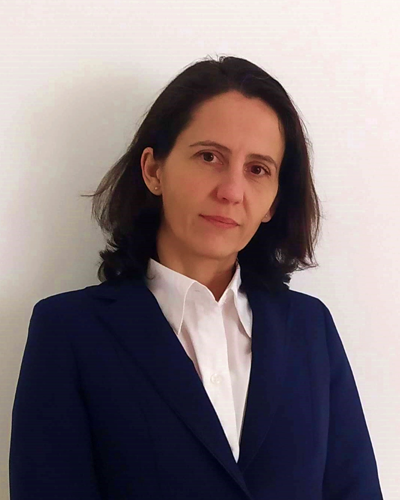

Hello! My name is Judit and I have nine years of experience in software development.
I have an MSc degree in Computer Sciences (2004, University of Debrecen, Hungary).
During my career I worked as a software developer for more than seven years in the cheminformatical and medical fields.
Main areas:
I also performed in the Scrum Master role for two years. In this role I have worked closely with the company's management and agile coaches, enhancing the collaboration between developer teams, helping them understand and accept changes more easily.
After dedicating years to full-time childcare I started learning about web development and data analysis. I found that the willingness to learn is the key for me to keep my motivation and to find meaningful goals.